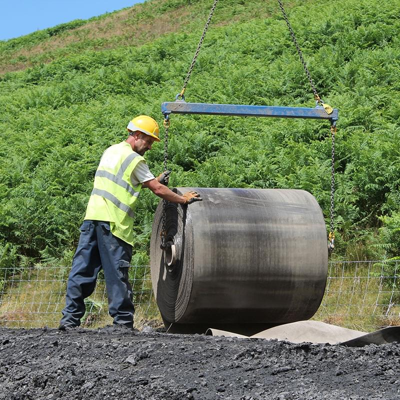
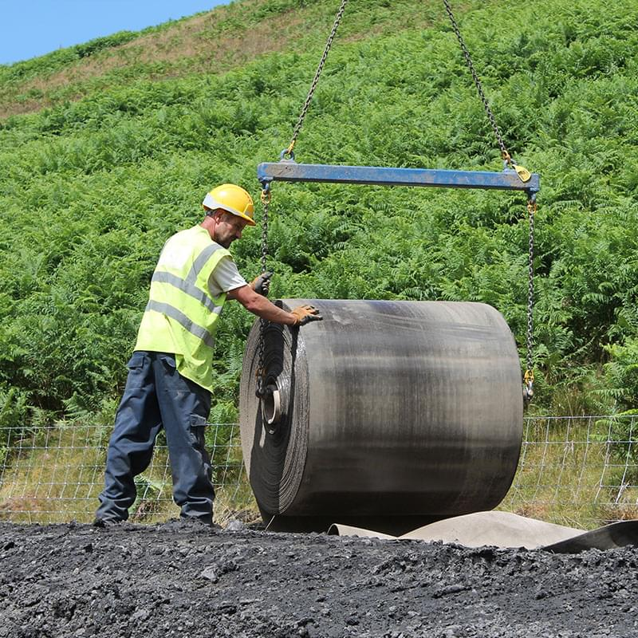

Москва. Центральный офис
Представительство в UK


как проходит монтаж
80%
прочности
через 24 часа
1-2 часа
время
затвердевания
Монтаж бетонного полотна Concrete Canvas: быстро, удобно, экономично
 

В зависимости от формы поставки полотна его разворачивание производится вручную или с помощью траверсы, закрепленной на подъемном кране или ковше экскаватора.
Главное требование при укладке — чтобы отдельные полотна шли внахлест, то есть чтобы край предыдущего куска полотна перекрывал край следующего. Это необходимо для их последующего скрепления между собой.
Полотно легко отрезается от рулона с помощью обычного ручного инструмента
Для крепления бетонного холста на поверхности (например на грунте) подходят обычные анкера или стальные колья со шляпками.
Необходимо, чтобы крепеж имел достаточную длину, максимально глубоко входил в грунт и чтобы его шляпки не пробили ткань насквозь.

Между собой отдельные полотна (куски) Concrete Canvas можно крепить различными способами: болтами, саморезами, клеем-герметиком, строительным раствором. Эти способы могут применяться как в комплексе, так и по отдельности. Все зависит от задачи, которую необходимо решить с помощью бетонного полотна. Например, если требуется укрепить канаву, то клей обеспечит герметичность стыков, а саморезы — дополнительную прочность крепления. Если требуется укрепить пологий склон, то, возможно, достаточно будет саморезов.

Смачивание производится путем разбрызгивания воды (не под давлением!) по поверхности холста или путем его погружения в воду. Подходит как пресная, так и морская вода.
Разбрызгивать воду следует до тех пор, пока полотно не будет оставаться ощутимо влажным даже спустя несколько минут после прекращения смачивания. Опасаться чрезмерного смачивания не стоит. Даже если монтаж Concrete Canvas будет проходить под проливным дождем, это никак не скажется на его конечных характеристиках.
Concrete Canvas застывает в течение 1—2 часов в зависимости от температуры окружающей среды. На протяжении этого времени с ним можно продолжать работать. Если все работы уже закончены, то объект можно покинуть. Окончательно полотно застынет через 24 часа.
Как использовать бетонное
полотно Concrete Canvas


Интересуют подробные характеристики полотна
Concrete Canvas и результаты
его испытаний?
Сделайте запрос, вышлем информацию
полотна и заменяет собой 2 грузовика с
бетонным раствором